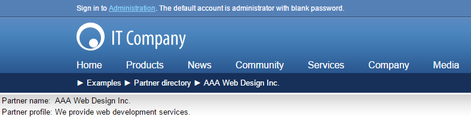

Example - Editing partner profiles
In this example, you will create a list of business partners who will be able to edit their profile on the My profile page after they have signed in. This example assumes that you are using the sample Corporate Site.
Creating the Partner profile page type
The Partner profile page type will store the name and text description of the partner.
Open the Page types application.
Click New page type.
In Step 1 of the New page type wizard, enter the following, then click Next:
Page type display name: Partner profile
Namespace: custom
Name: PartnerProfile
In Step 2, leave the default values and click Next.
In Step 3, add two attributes to the page type using the New field and Save buttons:
Partner name field
Field name: PartnerName
Field type: Text
Required: yes
Field caption: Partner name
Form control: Text box
Partner profile field
Field name: PartnerProfile
Field type: Long text
Field caption: Partner profile
Form control: Rich text editor
Click Next.
In Step 4, select PartnerName in Page name source.
Click Next in each of the remaining steps to finish the process.
The system creates a new page type named Partner profile.
Creating the partner list page
The partner list page will display a list of partner profile pages.
Open the Pages application.
Select the Examples page.
Click New (
 ) and select the Page (menu item) page type.
) and select the Page (menu item) page type.Type Partner directory as the Page name, select Create a blank page and click Save.
Creating a new blank pageSwitch to the Design tab and add the Repeater web part to the page.
Set the following repeater properties:
ID: repeaterPartners
Page types: custom.PartnerProfile
Transformation: custom.PartnerProfile.Default
Selected item transformation: custom.PartnerProfile.Default
Click Save & Close.
The system creates a page which will display a list of partner profile pages.
Creating the partner user account
Now create a sample user which we will use in the examples.
Open the Users application.
Create a new user with the user name AAAWebDesign.
Set the user's Privilege level to None.
Creating the sample AAAWebDesign userClick Save.
Switch to the Roles tab and add the user to CMS Basic users.
You have created a user whose partner portal page you will create in the following procedure.
Creating the partner profile page
Open the Pages application.
Select the Examples -> Partner directory page.
Click New (
) and select the Partner profile type.Enter the following information and click Save:
Partner name: AAA Web Design Inc.
Partner profile: We provide web development services.
Open the Properties -> URLs tab.
Set the Page alias to AAAWebDesign and click Save.
You need to use the same alias as the user name since you will be using them to match the users to their user profiles.
The alias path of the page will always be /Examples/Partner-directory/<user name>.
When you display the page in Preview mode now, you will see a page similar to this:

Previewing the partner page
Creating the partner profile editing page
Now you will create a page that will be available only to partners and that will allow them to edit their partner profile.
Open the Pages application.
Select the Examples page.
Click New (
) and select the Page (menu item) type.Type My profile, choose the Create a blank page option and click Save.
Creating a new page for editing partner profilesSwitch to the Design tab of the newly created page and add the Repeater web part.
The repeater will display the current user's partner profile.
Set the following properties for the repeater and click Save & Close.
ID: repeaterPartners
Path: /Examples/Partner-directory/{%CurrentUser.UserName%}
This ensures that the page displays the profile that matches the current user.
The {%CurrentUser.UserName%} macro is resolved as the user name of the current site visitor.
Page types:custom.PartnerProfile
Transformation: custom.PartnerProfile.Default
Selected item transformation: custom.PartnerProfile.Default
Hide if no record found: no (clear the check-box)
No record found text: No partner profile was found for your user account.
Content before: <h1>Your Partner Profile</h1>
Add the User contributions/Edit contribution web part, set the following properties for the web part and click Save & Close.
Path: /Examples/Partner-directory/{%CurrentUser.UserName%}
This ensures that the form edits a profile matching the current user.
The {%CurrentUser.UserName%} macro is resolved as the user name of the current site visitor.
Allow delete: no (clear the check box)
This option hides the Delete button as you don't want the partners to delete their profile accidentally.
Allow editing by users: Authenticated
You want to allow editing only to authenticated users. At the same time, you don't require the user to be a page owner.
Open the Properties -> Security tab.
Set the Requires authentication value to Yes and click Save.
This will enable access to this page only to the authenticated partners so that you know their user name for displaying their profile.
You have created a page that will allow the partners to edit their profiles.
Testing the profile editing page
Sign out and go to Examples -> My profile page (you can find a link at the bottom of the page).
The system displays a logon form.
Sign in as user AAAWebDesign and you will see your partner profile with the Edit link.
Viewing the partner profileClick Edit to open the edit dialog window, modify some values and click Save.
Editing the partner profileGo to Examples -> Partner directory page and you will see the updated profile.
Edited partner profile
Hint 1: Simplifying the process of creating a new partner
You can develop a custom page (see Custom development) containing a form for creating new partners, including code that automatically creates user accounts and partner profile pages with a corresponding alias path.
Hint 2: Assigning multiple users to the same partner profile
If the user name/page alias path mapping does not fit your needs or if you need to assign multiple users to the same partner profile, you can use another option:
Open the Modules application.
Edit the Membership module.
Open the Classes tab and edit the User class.
On the Fields tab, create a custom text field for users, for example named PartnerProfileAliasPath.
You can then use the custom field to specify which pages users can edit as partner profiles. Set the Path property of the Edit contribution web part using a matching macro expression, such as {% CurrentUser.PartnerProfileAliasPath %}.
Note: When configuring user accounts, you can find custom fields on the Custom fields tab.